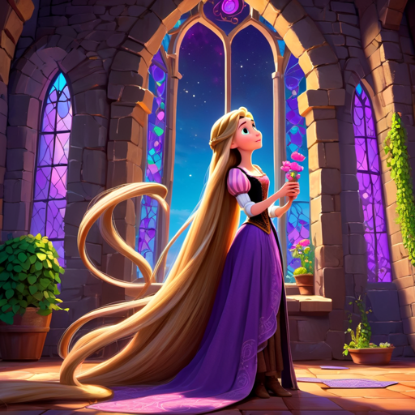

Info-
In de Disney/Pixar-animatiefilm "Rapunzel" uit 2010, bekend als "Tangled," wordt Rapunzel geboren
met magisch, lang blond haar met helende krachten. Ze wordt ontvoerd door de slechte tovenares
Mother Gothel, die haar opsluit in een toren en het meisje laat denken dat de buitenwereld
gevaarlijk is. Rapunzel, nieuwsgierig naar de buitenwereld, droomt van vrijheid en ontsnapping.
Op haar achttiende verjaardag ontdekt ze een verstekeling, de charmante dief Flynn Rider, die per
ongeluk in haar toren belandt. Ze sluiten een deal: hij helpt haar ontsnappen, en ze geeft hem de
gestolen kroon terug die hij verstopt heeft. Tijdens hun avontuur ontdekt Rapunzel haar ware
identiteit als de vermiste prinses.
De film verkent thema's van zelfontdekking, moed en onafhankelijkheid. Het romantische avontuur
tussen Rapunzel en Flynn bloeit op terwijl ze samen de wereld ontdekken. Uiteindelijk confronteert
Rapunzel Mother Gothel en neemt de controle over haar eigen lot. Het verhaal eindigt met de hereniging
van Rapunzel met haar echte ouders en een overwinning op de onderdrukkende krachten,
met een blijvende boodschap van liefde en vrijheid.
De film kwam uit in 2010 op 14 November.
Het bekendstenummer is: Het licht dat ik nu zie
